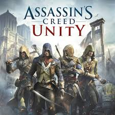

All Asassin's Creed games ranked
14. Asassin's Creed Rogue
I ranked Assassin's Creed Rogue at number 14 out of the 14 mainline Assassin's Creed games because, while it offers a unique perspective by placing the player in the role of a Templar, it ultimately feels like a recycled experience rather than a fresh installment. Its gameplay mechanics and naval elements are nearly identical to those in Black Flag, but without the same level of polish or compelling narrative. The story, though intriguing in concept, lacks depth and emotional impact compared to other entries in the series. Additionally, Rogue felt more like a stopgap title released to fill the gap between major launches rather than a fully fleshed-out mainline entry. Its short length and limited innovation made it the least memorable in the franchise for me.
13. Assasin's Creed
While Assassin's Creed laid the foundation for the entire franchise, it ranks low on the list due to its repetitive gameplay and lack of variety. At the time of release, the game was innovative, introducing parkour mechanics and the Animus concept, but compared to later entries, its missions feel monotonous and its world less immersive. The narrative is more of a framework than a fleshed-out story, and Altaïr, though iconic, lacks the personality and depth of later protagonists. Its historical setting is compelling, but the limitations of early hardware and design make it feel more like a proof of concept than a fully realized experience.
12. Assasin's Creed Odyssey
Odyssey is ambitious in scope but struggles to maintain the core identity of the Assassin's Creed series. While the vast open world and RPG mechanics offer a lot of content, much of it feels bloated and repetitive. The main narrative lacks focus and often drifts too far from the themes of the Assassins and Templars, turning the game into more of a general ancient Greek fantasy rather than an Assassin’s Creed story. The dialogue choices and multiple endings are a nice touch, but the sheer size of the game dilutes its impact. It’s enjoyable in bursts, but not as cohesive or memorable as stronger entries.
11. Asassin's Creed Valhalla
Valhalla improves upon some of Odyssey’s missteps, offering a slightly more grounded and character-driven story. Eivor is a more defined protagonist, and the Norse setting is richly detailed. However, it still suffers from excessive padding, overly long playtime, and a story that takes too long to develop. The settlement-building mechanic adds a nice touch of personalization, but the game loses momentum due to its repetitive quest structure and underwhelming modern-day segments. While a solid game overall, it doesn’t quite capture the focused narrative and gameplay refinement found in higher-ranked titles.

10. Asassin's Creed Mirage
Mirage is a welcome return to the series’ roots, emphasizing stealth, parkour, and a smaller-scale story. Its compact map and focused narrative are refreshing after the sprawling epics of Odyssey and Valhalla. However, while it successfully recaptures the spirit of the early games, it doesn’t do enough to evolve or modernize the classic formula. The story is straightforward but lacks the emotional depth of standout entries, and its gameplay, while polished, doesn’t offer much innovation. It ranks higher than recent RPG-heavy titles for its tighter focus but doesn’t break enough new ground to rise further.
9. Assasin's Creed Syndicate
Syndicate brought some much-needed personality and charm back to the franchise after Unity, thanks to its twin protagonists, Jacob and Evie Frye. The Victorian London setting is atmospheric and well-realized, with strong historical integration. The addition of the grappling hook and carriage chases added some fun variety to traversal and combat. However, the story felt a bit safe and lacked the narrative weight of other entries. While enjoyable and stylish, Syndicate didn’t leave a lasting impact compared to more ambitious or emotionally resonant titles, which keeps it from breaking into the top tier.
8. Assasin's Creed III
Assassin’s Creed III was a bold shift in the franchise, offering a new setting during the American Revolution and introducing a new protagonist, Connor. The game’s opening hours are slow, but it eventually builds into a compelling story about identity, freedom, and resistance. The frontier and wilderness traversal was innovative, and the naval combat system laid the groundwork for future successes. However, Connor’s stoic personality and some pacing issues hold the game back. Despite its flaws, AC III deserves credit for its ambition and pivotal role in advancing the series’ mechanics and storylines.
7. Assasin's creed Brotherhood
Brotherhood successfully expanded on Assassin’s Creed II by refining its mechanics and introducing new features like the Brotherhood recruitment system. Rome was a vibrant and intricate setting, and the game delivered a strong continuation of Ezio’s story. While it doesn’t make as massive a leap as its predecessor, its polish, pace, and strategic additions gave the series more depth. The story is compelling and keeps the momentum going, but because it feels more like an extension of AC II rather than a wholly new experience, it ranks just outside the top five.
6. Assasin's Creed Revelations
Revelations brought a fitting and emotional conclusion to Ezio’s journey while tying together the stories of Altaïr and Desmond in a thoughtful way. The atmosphere of Constantinople, the rich culture, and the matured Ezio make for a poignant and memorable narrative. While some mechanics, like the tower defense segments, felt unnecessary, the story’s emotional weight and the sense of finality give it a special place in the series. It balances nostalgia and evolution well, earning its place among the stronger entries.
5. Assasin's Creed Origins
Origins marked a successful reinvention of the franchise, introducing RPG elements and a more open-ended structure. Bayek is one of the most likable and grounded protagonists in the series, and his journey is both personal and historically significant, detailing the birth of the Assassin Brotherhood. Ancient Egypt is a stunning and immersive setting, and the shift in gameplay mechanics felt fresh without abandoning the series' essence. While it lost some stealth emphasis, its world-building, storytelling, and reinvigorated design pushed the franchise forward in an exciting direction.
4. Assasin's Creed Shadows
Though a newer entry, Shadows earns a high rank for delivering on long-awaited fan dreams: a feudal Japan setting with dual protagonists and a refined balance of stealth and action. It brings together the best elements of classic and modern Assassin’s Creed, with a focused narrative, improved RPG mechanics, and a beautifully realized world. The contrast between stealth-oriented shinobi gameplay and samurai combat creates a dynamic experience, while the setting itself feels like a perfect fit for the series. It’s a standout for both innovation and fan service done right.
3. Assasin's Creed Unity
Despite its rocky launch, Unity stands out for its exceptional parkour system, gorgeous recreation of Revolutionary Paris, and a return to stealth-focused gameplay. Arno’s story, while not as emotionally gripping as some others, is serviceable, but it’s the gameplay that elevates Unity. The dense urban design and crowd systems make it one of the most immersive entries. Over time, with patches and updates, Unity matured into one of the most technically impressive and stylish Assassin’s Creed games, deserving a top-tier spot.

Assasin's Creed II
Assassin’s Creed II is the game that truly defined the series. It expanded on every aspect of the original, offering a charismatic protagonist in Ezio, a richly detailed Renaissance Italy, and a layered narrative that blended personal revenge with the broader Templar-Assassin conflict. The gameplay was smoother and more varied, and the sense of progression in both story and mechanics was masterfully executed. AC II remains a benchmark for sequels in gaming, and its legacy endures as one of the most influential entries in the franchise.
1. Assasin's Creed IV Black Flag
Black Flag takes the top spot for its perfect blend of pirate fantasy, engaging naval combat, and strong storytelling. Edward Kenway’s character arc from selfish rogue to reluctant hero is compelling, and the Caribbean setting is vibrant and packed with things to explore. The freedom of the open seas, combined with classic Assassin’s Creed mechanics, made for a fresh and thrilling experience. It managed to feel like both an Assassin’s Creed game and something entirely unique, which is why it remains the most beloved and replayable entry in the series.